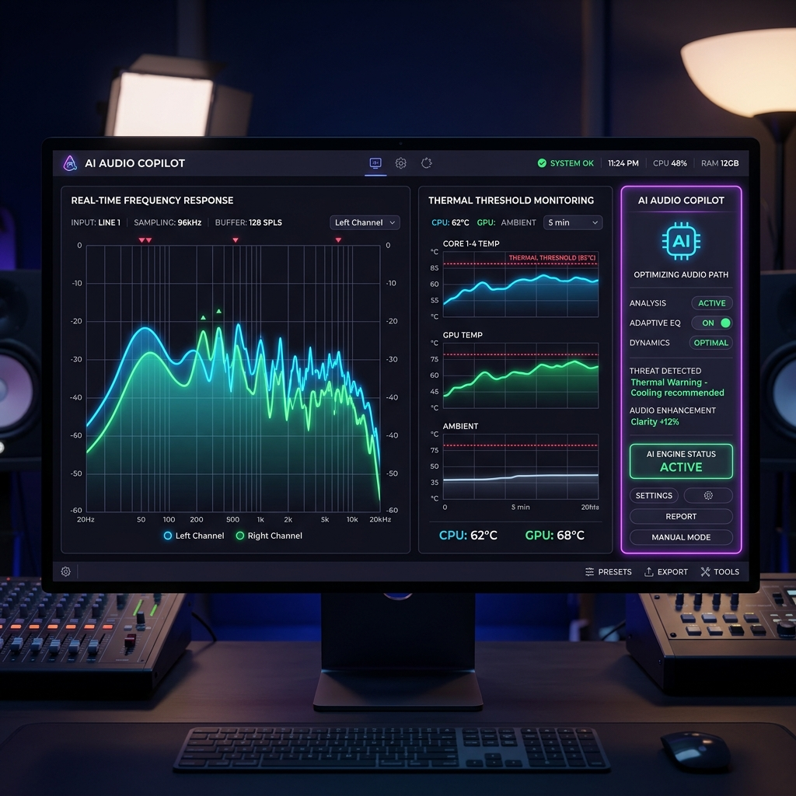
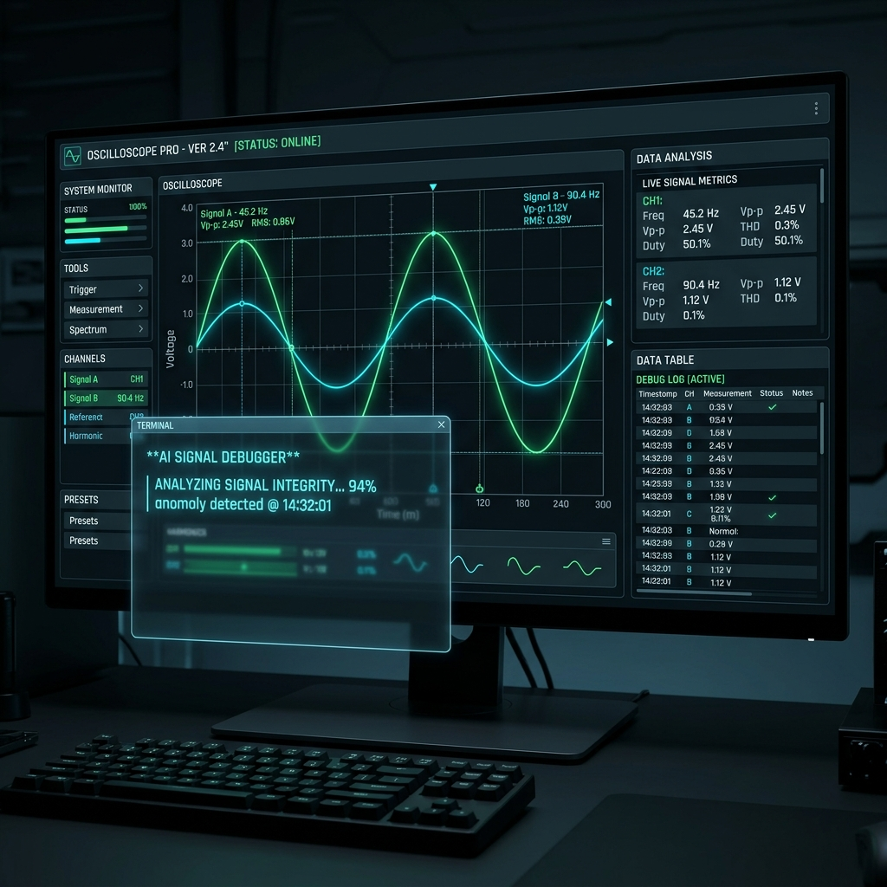
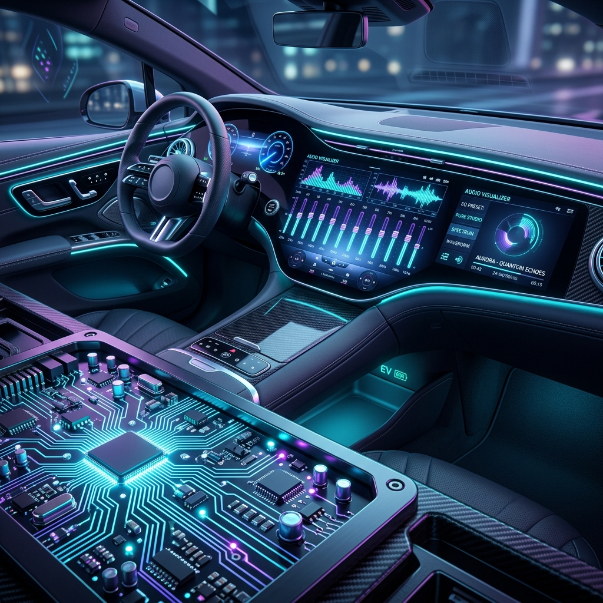
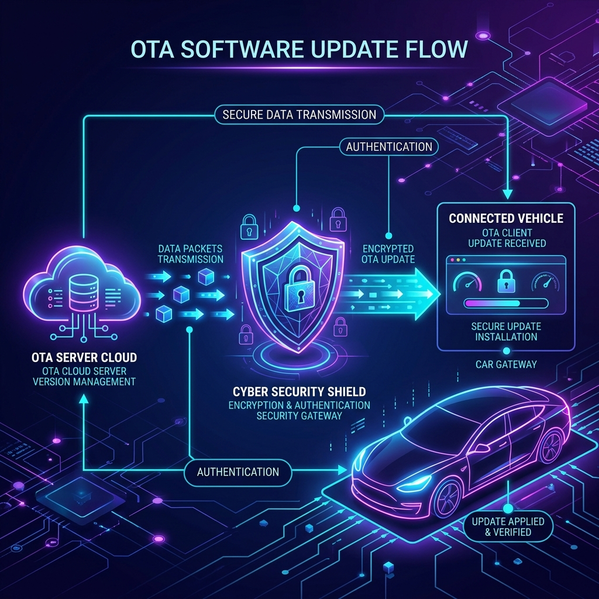

Hi, I'm Eric Lai
I bridge Advanced Audio Systems with AI Innovation
Core domain specialist in system-level debugging and customer issue resolution for USB/Automotive Codecs, DSPs, and Smart AMPs. Supporting diverse client applications from Sound Cards and Display Audio to Telematics, Docking Systems, and Robotics, using self-developed AI tools as an efficiency multiplier.
# AI-Powered Application Engineering
$ cat capabilities.json
{
"role": "Application Engineer II",
"company": "Realtek Semiconductor",
"expertise": [
"Audio Codec (USB & Auto)",
"DSP Algorithms & Tuning",
"Smart AMP Telemetry"
],
"superpowers": {
"AI_integration": true,
"hardware_troubleshooting": "Expert"
}
}
$ _
About Me
Resolving Complex Audio Integration Challenges with Precision
I am a high-caliber Application Engineer at Realtek Semiconductor. At my core, my primary directive is unlocking system-level hardware/software bottlenecks, isolating electrical anomalies, and resolving the most complex technical challenges for global clients. By combining domain-level expertise in USB audio codecs, automotive codecs, Digital Signal Processing (DSP), and Smart AMP systems, I bridge the gap between silicon layout and consumer-ready products.
Throughout my tenure, I have successfully debugged, optimized, and brought to market a highly diverse range of customer application products, including Sound Cards, Smart Display Audio, Automotive Audio, Telematics T-Boxes, Gaming Headsets/Microphones, High-speed Docking Systems, and Autonomous Robotics.
To maximize turnaround times and support this wide product portfolio, I actively build custom AI-assisted productivity tools, script compilers, and interactive mobile utilities. Combining AI workflows with iOS Swift development, I have designed mobile applications that establish CoreBluetooth BLE links to control ESP32 IoT nodes for remote hardware telemetry and field diagnostics, enabling rapid end-to-end IoT product prototyping.
Prior to Realtek, I drove vehicle system integration projects at Nissan Taiwan, implementing robust CAN Bus protocols, Automotive Ethernet architectures, telematics OTA systems, and automotive cybersecurity.
Expertise & Skills
Audio & Hardware Systems
-
USB Codec Integration 95%
-
Automotive Codec & EEA 90%
-
DSP Tuning & Smart AMP 88%
-
CAN Bus & Automotive Ethernet 92%
AI, iOS & Software Systems
-
AI Tool Development (Python/C#) 90%
-
iOS App Development & BLE Integration 86%
-
IoT System Architecture (ESP32 / MCU) 88%
-
LLM Orchestration & Script Automation 92%
AE Methodologies & Lab Tools
-
Signal Integrity Analysis 93%
-
Scope / VNA / SerDes Measurements 90%
-
System-Level Debugging 96%
-
Cross-Functional Customer Support 95%
Professional Projects & Utilities

AE Widget: DSP & Memory Diagnostic Hub
A high-performance Windows GUI utility designed to streamline physical interface reads, writes, compares, and binary hex dumps (USB MEM/I2C). Serves as the central console for full DSP register adjustments, clock gating, and electrical audio pathway routing.

DSP FW Merge Tool
A Python-based GUI application packaged as a standalone EXE. It automates firmware packaging and registers merging by reading binary DSP packages, modifying initial registers, adjusting DSP algorithms, and maintaining robust firmware version controls. Eliminates manual, error-prone batch/CSV configurations.

ITU-T P1140 Telematics Testing Platform
Architected a comprehensive Telematics Box (T-Box) emulation system integrating Quectel evaluation kits (EVKs). Leveraged this hardware-in-the-loop environment to conduct ITU-T P.1140 voice quality, noise reduction, and echo-cancellation compliance testing on proprietary Realtek automotive codecs and DSP units.

Automotive Codec Script Converter
A specialized C# .NET conversion tool designed to resolve register schema incompatibilities. It parses complex multi-page, burst-mode I2C registers from automotive audio codecs and compiles them into clean, linear single-address + single-data sequences compatible with legacy test instruments.
AI-Assisted iOS BLE & ESP32 IoT Controller
Designed and developed an AI-assisted iOS mobile application utilizing Swift and CoreBluetooth to establish robust BLE connections with ESP32 microcontrollers. Enables real-time telemetry, bitwise register settings modification, and remote hardware-in-the-loop IoT product demonstrations.
DSP JTAG Instruction Compiler
A high-efficiency Python scripting utility developed to accelerate JTAG hardware verification. It parses human-readable initial register scripts and compiles them into structured, JTAG-compliant binary register instruction formats for immediate diagnostic injection.
32-Bit Bitwise Register Calculator
A highly practical visual helper tool designed to increase diagnostic accuracy. It maps 32-bit (4-byte) hexadecimal values into a dynamic array of 32 checkable boxes, enabling engineers to visually map, compute, and toggle bit flags in real-time.
Comm Module EVB AI Control Tool
An intelligent GUI tool built to interface with Communication Module EVBs (Quectel, Yuge, Huawei/HiSilicon TBOX SoC). It leverages AI Agents to parse and send complex AT Commands, significantly simplifying the initialization and diagnostic processes for advanced automotive communication modules.
AI Schematic Review Automation Suite
A complete "one-click" GUI workflow that automates customer circuit PDF reviews by cross-referencing IC whitepapers. Backed by a CLI connecting to corporate Claude Code infrastructure, it features auto-environment detection (Intranet/Version/Login) and dynamic model switching. Integrated Microsoft 2FA via Azure Management Portal ensures secure access control for authorized personnel.
Professional Journey
Application Engineer (Audio ICs Division)
Orchestrating high-tier customer integration architectures, system-level debugging, and silicon validation across advanced USB Codecs, Automotive Codecs, DSP subsystems, and Smart AMP technologies.
- Core Technical Debugging & Escalations: Serve as the primary engineering resource for resolving complex hardware/software system bugs and debugging "impossible" anomalies for global clients. Successfully debugged and validated audio paths across diverse product categories, including: Sound Cards, Smart Displays, Automotive Telematics, gaming headsets/microphones, high-speed Docking Stations, and autonomous robotic control modules.
- Custom GUI Systems & Efficiency Scripting: Engineered self-developed tools as work-efficiency boosters: the AE Widget (C# .NET GUI for I2C/USB register operations and DSP clock gating/power tree configurations) and the DSP FW Merge Tool (Python GUI utility automating binary Initial Register mapping and firmware algorithm deployments to eliminate manual, error-prone edits).
- In-Circuit Validation Utilities: Developed the DSP JTAG Convert Tool in Python to compiler register initializations directly into high-speed physical JTAG instructions, and compiled the C#-based Automotive Codec Init Script Converter to parse page-burst I2C configurations into flat data arrays for legacy read/write validation.
- AI & Mobile IoT Ecosystems: Built custom iOS Swift applications integrating CoreBluetooth BLE protocols to pair with and telemetry-control ESP32 IoT devices, expanding pre-silicon firmware simulation and hardware-in-the-loop diagnostic capabilities.
- Acoustic & Telematics Standards Testing: Constructed a physical Telematics Box (T-Box) validation environment using Quectel EVKs to conduct comprehensive ITU-T P.1140 voice quality performance, echo cancellation, and acoustic tests on proprietary Realtek automotive codecs and DSP units.
- AI-Driven Schematic Review Leadership: Directed company-wide AI initiatives, designing training programs on leveraging AI to review customer schematics and generate IC whitepapers. Developed an automated "one-click" GUI tool that interfaces with the company's Claude Code CLI. This tool intelligently detects intranet/version/login environments, allows dynamic AI model switching, and autonomously reviews customer circuit PDFs against IC whitepapers to output comprehensive PDF reports. Integrated Microsoft 2FA via Azure Management Portal for strict access control.
- Advanced Telematics EVB & AI GUI Integration: Expanded T-Box and telematics expertise by deep-diving into AT Commands and complex communication module EVBs (including Quectel, Yuge, and Huawei/HiSilicon TBOX SoCs). Created specialized GUI tools powered by AI Agents to abstract and manage these communication protocols, significantly accelerating evaluation board initialization and automotive gateway diagnostics.
Vehicle System Integration Engineer
Led electronic components verification, EEA designs, and vehicle-level protocol analysis for multimedia, telematics, and active safety components.
- Commanded in-depth CAN Bus and Automotive Ethernet packet capturing and reverse-engineering diagnostic analysis.
- Executed robust cybersecurity validations for telematics OTA systems, securing communication pathways between remote servers and ECUs.
- Developed cross-functional system specifications connecting overseas engineering teams with local manufacturing factories.
Semiconductor Engineering
Developed core engineering knowledge regarding advanced semiconductor manufacturing quality controls and silicon validation standards.
Hardware Diagnostics & System Validation
Gained critical domain expertise in motherboard architecture, hardware-level diagnostics, and system validation workflows.
Let's Connect
Professional Channels
Whether you want to discuss advanced audio IC integration, iOS BLE firmware interfaces, custom AI-driven software utilities, or industry collaborations, let's connect through my official channels.